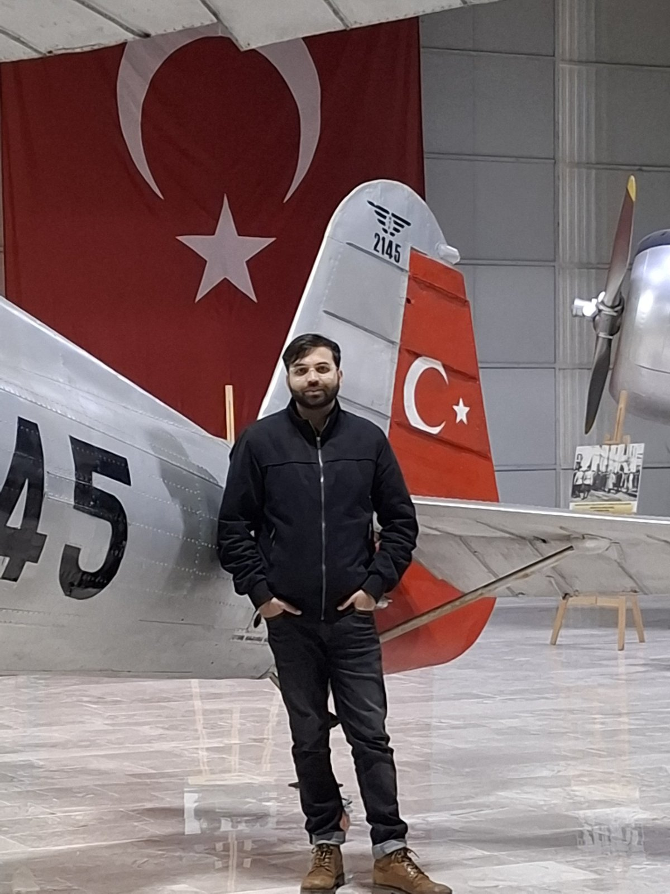
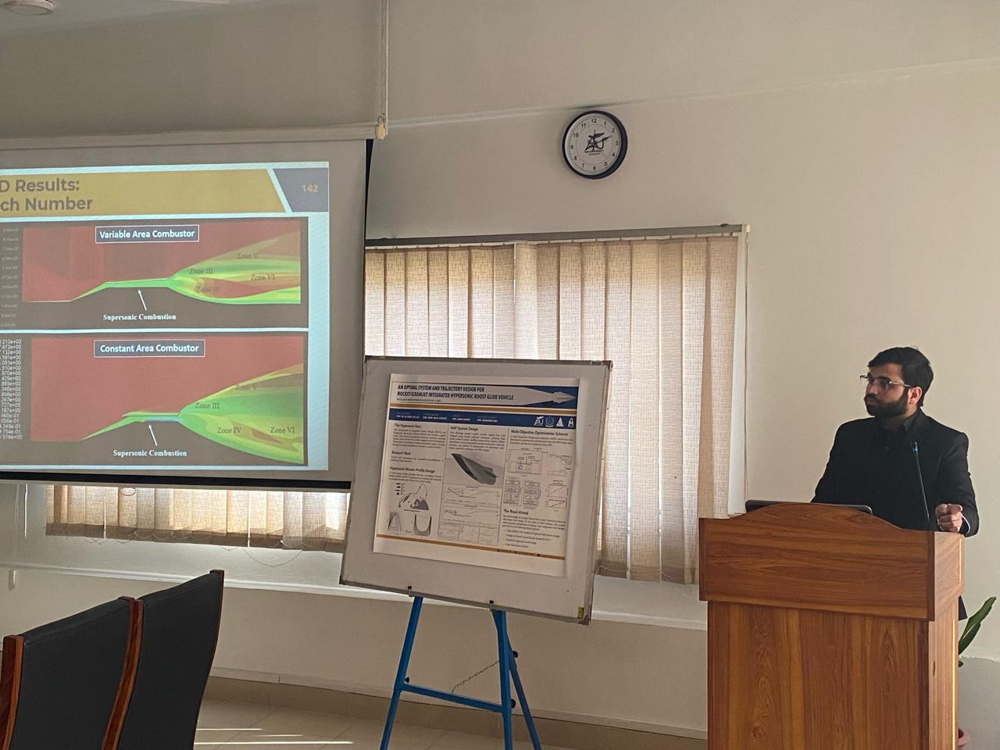

I'm a Mechanical Engineer (Air University, Islamabad) whose whole career has run along one axis: how physics, airflow, heat, structural load, decides whether a piece of hardware actually works in the field. That started with cooling avionics boxes bolted into fighter aircraft bays, and has grown into CFD and fluid-structure interaction work on unmanned aircraft, small-scale turbomachinery, and ground vehicles.
I currently work as an Aerodynamics Engineer at Baykar Technologies, across Pakistan and Türkiye, where I run CFD on UAV airframes and propeller engines, conduct FSI-based aeroelastic flutter analysis, build VN-diagrams and flight envelopes, and support hardware-in-the-loop (HILS) development with aerodynamic parameters.
Before that, I led aerothermal research at Shocks & Stars Engineering and at Air University's AEROFLUX Lab, qualifying avionics LRUs under MIL-STD/MIL-E-5400, running hypersonic scramjet and plasma-arc thruster analysis, and securing government research grants from SPRC along the way.

I default to first-principles analysis backed by CFD/FEA, not the other way around, a simulation is only as good as the physical reasoning that set it up. I build defensible, quantified answers: a flutter boundary, a thermal margin against a MIL standard, a Cd number with a benchmark to compare it against. Where a project calls for it, I build the surrounding tooling too, digital twins, MATLAB/Python pipelines, response-surface DoE, rather than treating simulation as a one-off exercise.
My longer-term interest is in physics-informed neural networks, reduced-order models, and digital twin frameworks, using machine learning to compress expensive CFD/FSI campaigns into fast, trustworthy surrogates, without losing the physical grounding that makes the results usable in an engineering decision.
Mushabbar.Noor · Mushabbar Husnain Noor · mushabbarhn@gmail.com · Rawalpindi, Pakistan